I am a Postdoctoral Associate at the Hixon Center for Urban Sustainability and the Seto Lab, led by Dr. Karen Seto, where my research focuses on the critical intersections of urban inequity, accessibility, and climate challenges. I hold a Ph.D. in Civil Engineering from Purdue University, with concentrations in Geomatics and Computer Engineering. My work aims to advance urban sustainability through innovative 3D urban mapping and analysis, leveraging deep learning methods and digital twin simulations.
← Me in Pasadena, CA, while attending the 2023 IEEE International Geoscience and Remote Sensing Symposium. :)
Interests
- Urban Studies
- Remote Sensing/GIS
- Machine Learning
- Environmental Inequalities
Research Projects
3D Landscape Clustering Framework
H. Song, G. Cervini, A.Shreevastava, J. Jung
Sustainable Cities and Society
As cities grow, managing urban heat becomes crucial. Traditional methods often fail to capture the complexity of urban landscapes. Our new framework, 3D Landscape Clustering (3LC), offers a flexible clustering approach that improves the depth and accuracy of urban climate studies by clustering landscapes into homogeneous groups using high-resolution 3D land cover maps. We show how this method effectively analyzes urban heat in multiple cities and discuss its potential for future research, moving beyond traditional classification methods like the Local Climate Zone (LCZ) framework. Grateful to co-authors Gaia Cervini, Anamika Shreevastava, and Jinha Jung for their valuable contributions!
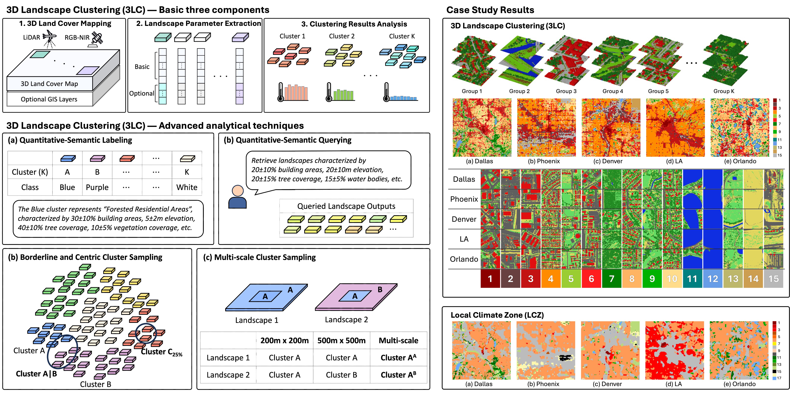
Geospatial Digital Twin
H. Song, J. Jung
Our team embarked on an ambitious project to create digital twin cities across the U.S., with funding from the National Geospatial-Intelligence Agency (NGA)! These virtual replicas serve a crucial role in innovative studies aimed at promoting urban equity and resilience. A 3D land cover map would be one of the foundational layers for the twins.
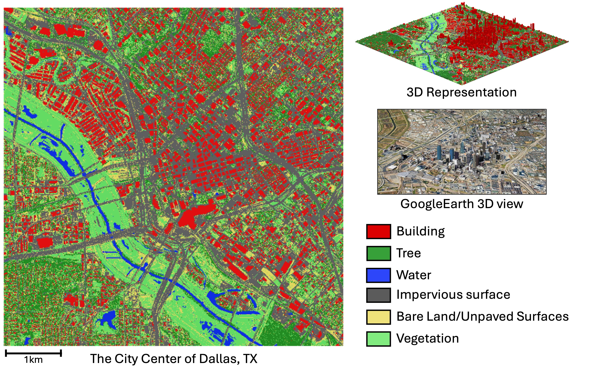
Harnessing Digital Twin Simulations for Heat-Resilient Urban Planning
H. Song, G. Cervini, J. Jung
I'm interested in analyzing urban heat using digital twin simulations and deep learning models, specifically focusing on the role of 3D urban canopies. Thrillingly, my preliminary findings (slide) were recognized, earning 2nd place in a podium presentation at the 28th Environmental Engineering & Science Symposium, UIUC. Eager to present these findings in a paper soon! :)
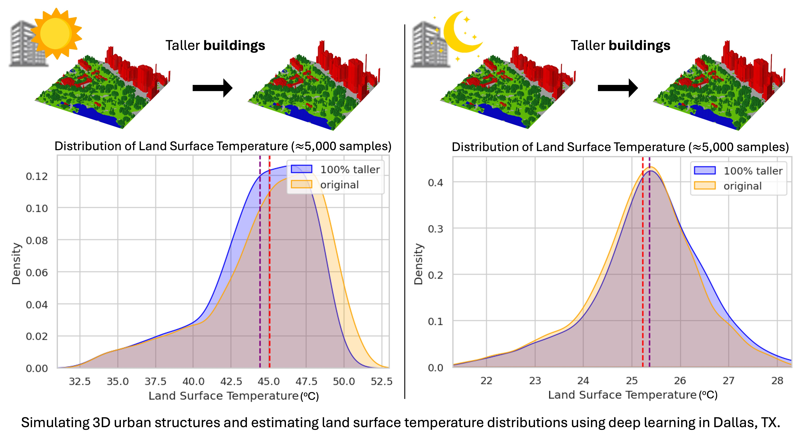
Accessible Area Mapper — Paving the Way for Inclusive Urban Mobility
H. Song, J. Carpenter, J. Froehlich, J. Jung
SIGSPATIAL
Historically, navigation systems relied mainly on image data or GPS, overlooking details like pathway width and slope vital for diverse mobility needs. This oversight stemmed from the dominant use of deep learning road mapping, which often used biased bird's-eye-view imagery. To address this, I introduced the "Accessible Area Mapper" that understands 3D environments to identify navigable routes. This system caters to multiple mobility needs, ensuring accessibility for all, including people with disabilities. We collaborate with a human-centered computing expert from the University of Washington with extensive experience in "Project Sidewalk".
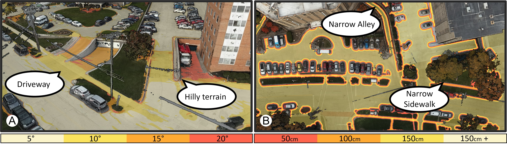
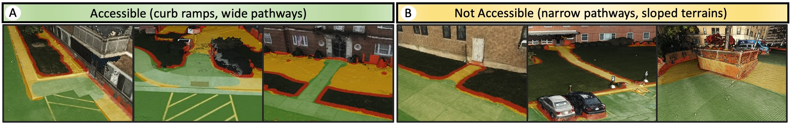
Building Elevation Attributes For Flood Risk Management
H. Song, H.L. Yang
IEEE IGARSS
While at Oak Ridge National Lab, I developed a scalable method for extracting critical building elevation attributes—Lowest Adjacent Grade (LAG) and Highest Adjacent Grade (HAG)—essential for flood risk management. This approach, using airborne LiDAR data exclusively, overcomes the data misalignment issues of traditional methods, improving accuracy and reliability. Special thanks to my co-author, Lexie Yang!
LiDAR for 3D Hydrography
H. Song, J. Jung
Paper is on the way!
We developed a unique surface water mapping technique using only airborne LiDAR data. This method utilizes the principle that locally connected surface water maintains a consistent elevation due to surface tension. By integrating this "physical constraint" into the decision-making process, our method surpasses previous methods. As it depends solely on airborne LiDAR and operates unsupervised, it's scalable for extensive topographic mapping, making it more practical and reliable for large-scale projects.
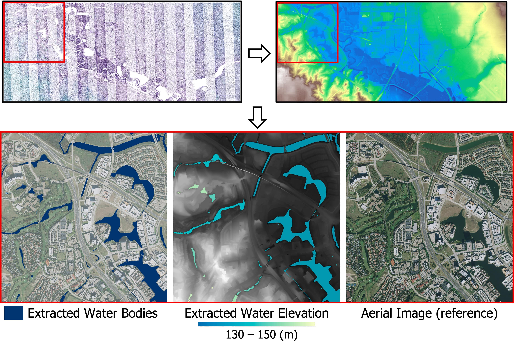
A New Digital Terrain Model (DTM)
H. Song, J. Jung
Paper (Remote Sensing)
DTM is a three-dimensional representation of the bare earth surface that excludes objects such as trees and buildings. Conventional DTM generation methods consider the local-neighborhood of a 3D point and struggle to clearly define what an object is. In contrast, our method considers the global context and provides a clear definition of both objects and ground. Our method has a unique property in that it consistently considers bridges and overpasses as ground. With this unique property of our DTM, only objects standing on the ground can remain in the normalized DSM. This offers significant advantages in large-area 3D urban object mapping.
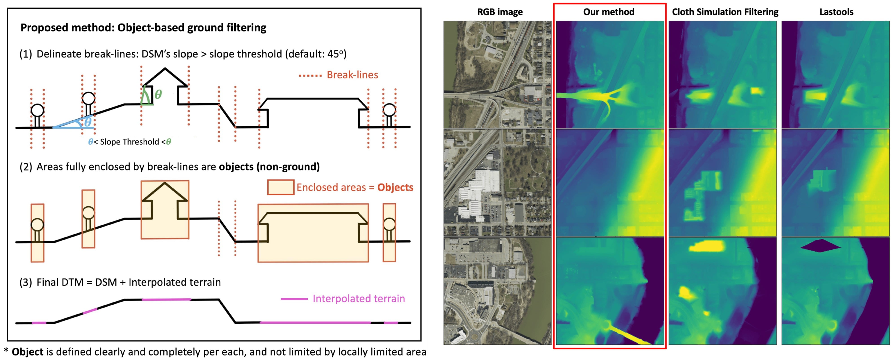
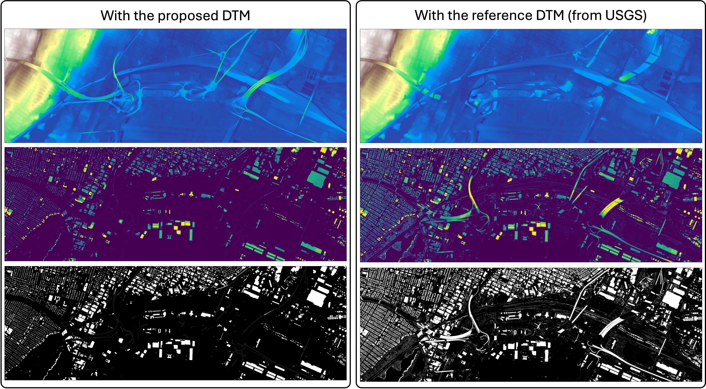
Unsupervised 3D building mapping with LiDAR
H. Song, J. Jung
Paper (IEEE JSTARS)
GIS Cup Paper (ACM SIGSPATIAL)
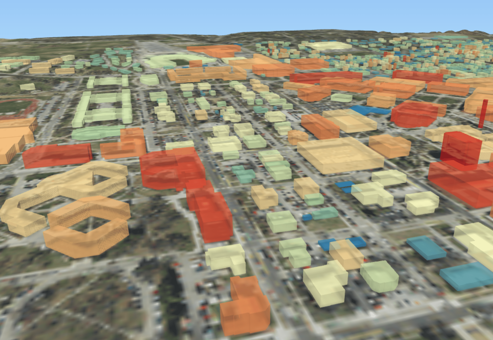
3D building maps are essential for digital twin cities and offer valuable information for various smart city applications. We developed an unsupervised 3D building mapping pipeline using airborne LiDAR, which outperforms deep-learning-based methods in accuracy. This pipeline won 1st place at the ACM SIGSPATIAL GIS Cup 2022!
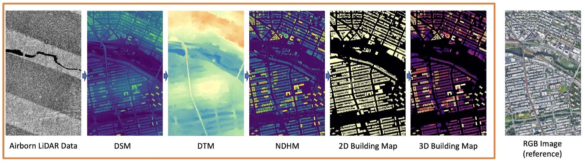
Check out the following 3D building models via the web! The taller the building, the darker color it has.
* 3D New York City
* 3D Denver
* 3D New Orleans
3D building maps will be kept updated for the entire US. Please email me if you want to get TIFF image (Files are HUGE!)
Weekly supervised learning with crowdsourced data
H. Song, HL. Yang, J. Jung
Paper (IEEE JSTARS)
The crowdsourced label has a great potential for deep learning. However, the low quality of labels hampers the successful learning of the deep model. In this work, we propose a self-filtered learning that enables deep models to learn effectively with low-quality OpenStreetMap labels. Our method progressively refines training samples during the training process based on the loss of training samples.
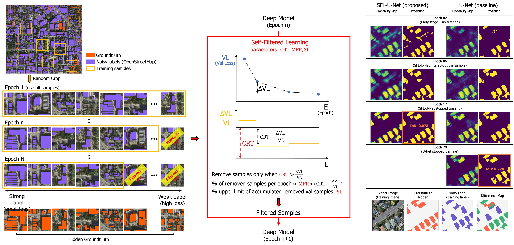
Photovoltaic (PV) power forecast with meteorological satellite
H. Song,, G. Kim, M. Kim, Y. Kim
 Paper (IEEE APPEEC)
Paper (IEEE APPEEC)
An accurate PV power forecast is important for efficient power system planning in smart cities. We proposed a deep model that integrates multi-temporal meteorological satellite images and historical PV data for short-term PV forecasting. Our framework is being used on the platform of SKT, South Korea's largest wireless carrier. Also, I am very proud to have worked as the project manager for this project. (Thanks SKT for providing the cool GIF!)
Here is another work with my colleagues where we compared the significance of implementing different meteorological satellite images for PV forecast.
Patch-based Light CNN: Land cover mapping with satellite images
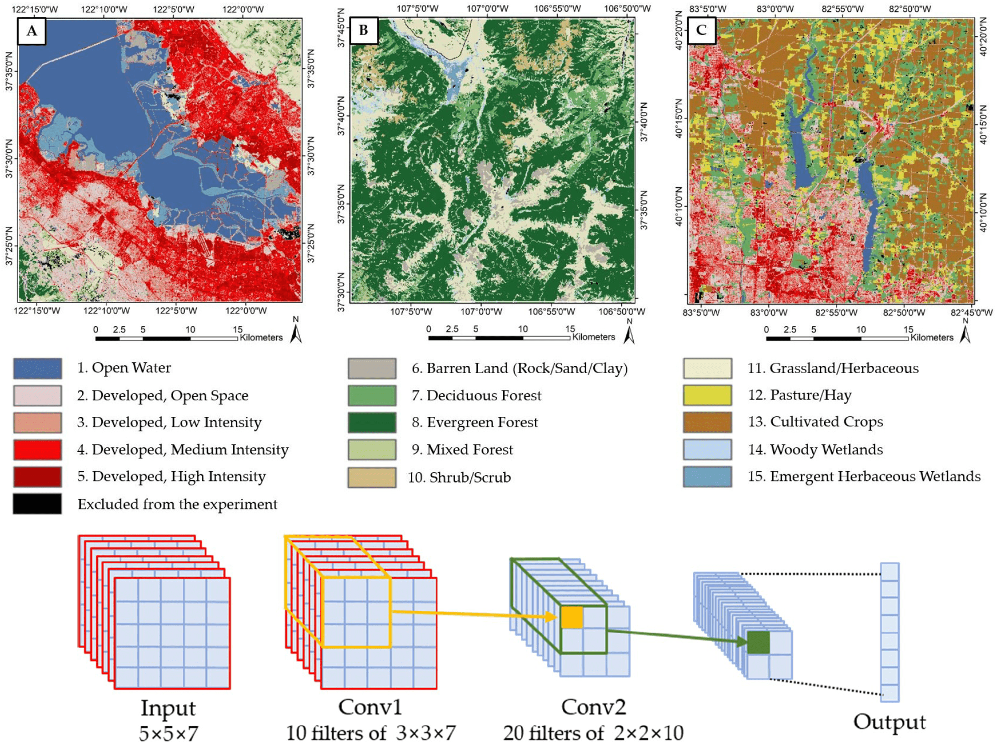
H. Song, Y. Kim, Y. Kim
Paper (Remote Sensing)
The land cover map is quintessential data for various urban and environmental studies. The U.S. Geological Survey (USGS & MRLC) has been mapping land cover maps of the entire US for more than 20 years. One difficulty is the ground-truth is considerably site-dependent and not pure as one pixel's resolution is 30m by 30m. Our work presents that a very simply patch-based CNN model performs better by utilizing contextual information than conventional pixel-based algorithms.
Here is another piece of extended research for boosting performance based on the sample filtering.
Academia
- Ph.D. in Civil Engieering (2020-2024)
- Advisor: Dr. Jinha Jung
- Dissertation: Transparent and Scalable Knowledge-based Geospatial Mapping Systems for Trustworthy Urban Studies
- M.S. Civil and Environmental Engieering (2018-2020)
- B.S. Civil and Environmental Engieering (2012-2017)
- Advisor: Dr. Yongil Kim